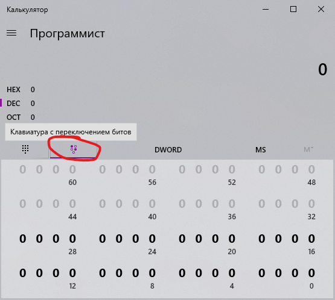

Вообще, читать всё это имеет смысл только для понимания темы, ибо сами задачи решить можно с помощью миллионов онлайн-калькуляторов ¯\_(ツ)_/¯
Тут самое сложное – как-нибудь понять, что 1 байт это два символа, а один символ это 4 бита. То есть, когда
пишут "байты
10-9 – номер группы", то это 4 символа: 60017 ⟶ EA71.
Пока что предполагаем, что байты считаются справа налево, т.е. 16-11 байты это самые левые. По документу по ссылке
это 2001:DB8 и еще один ноль, потому что адрес из документа на 4 байта, а занять этим нужно 6.
Первые пять букв имени переводятся в шестнадцатеричные значения ASCII вот здесь, получается ровно 5 байт. Передаю привет тем, у кого имя короче пяти букв – придётся дописать в конце по два нуля за каждую недостающую букву.
Адрес нужно не забыть сократить, это значит убрать ненужные нули (0DB8 ⟶ DB8,
0000 ⟶ 0) и все нули в конце заменить на ::. Префикс сети (циферка в конце)
получается равным 8 бит · 13 байт (с 16 по 4) = 104. И даже если имя короче, то всё равно 104, по условию
эти байты всё равно заняты полем "имя".
Готовый сокращённый адрес (адрес из документа, номер группы, имя):
2001:DB8:0:EA71:5649:5441:4C00::
/104
Чтобы разбить её на подсети, нужно посчитать, сколько бит (и в итоге символов) нужно для заданного числа сеток. Например, 32 сети это 5 бит (2^5 = 32), значит префикс сети 104-5 = 99. Адрес первой сети равен адресу выше, а последней считается путём добавления всех пяти единичек после всего того, что написали изначально, переводя по пути в символы, естественно. Здесь будет два символа – 1111 ⟶ F и 1000 ⟶ 8 (нулями добивается в конце, а не как обычно в начале, потому что мы тут не математику считаем, а делим адреса на две половинки).
Готовый адрес последней сети:
2001:DB8:0:EA71:5649:5441:4CF8:: /99
95% работы за нас будет выполнять классический виндовый Калькулятор. Нам нужен тру-"Программист" калькулятор и битовая клавиатура. Заодно можно поменять QWORD на DWORD, чтобы случайно не зацепить лишние биты:
